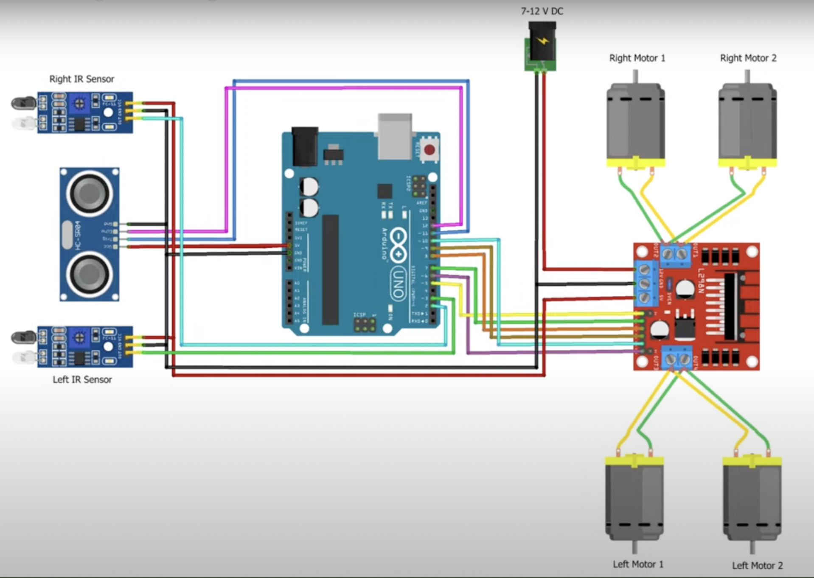

SoloStep
I was part of a team building a practical mobility solution for older adults. The project began with a clear problem: people need tools that feel intuitive, useful, and dignified rather than complicated or clinical.
- Worked with mentors and student engineers to shape the concept.
- Contributed to design discussions, prototyping, and iteration.
- Helped move the project from initial idea to a functioning physical model.